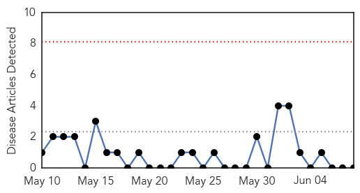

Pertussis
30-Day Web Trend
0 alerts, 0 warnings

30-Day Twitter Trend
0 alerts, 0 warnings

Article Locations

Article Confidences

Top Articles:
-
No articles found for Jun 08, 2015
Top Tweets:
-
No tweets found for Jun 08, 2015
MERS
30-Day Web Trend
18 alerts, 2 warnings

30-Day Twitter Trend
10 alerts, 1 warnings

Article Locations

Article Confidences

Top Articles:
- 1.000
- Editorial: A new alert against MERS-Cov
- 1.000
- Does MERS Pose a Threat in the US?
- 1.000
- S Korea shuts nearly 2,000 schools as MERS cases soar
- 1.000
- South Korea reports sixth MERS death, surge in new infections as government tackles outbreak
- 1.000
- South Korea’s MERS outbreak and the importance of infection control – The Pump Handle
- 1.000
- South Korea Shuts 2,000 Schools As MERS Cases Increase
- 0.999
- S Korea shuts nearly 2,000 schools as MERS cases soar
- 0.999
- Self-care essential to combating MERS, news, Health News, AsiaOne YourHealth
- 0.999
- Sixth person dies of MERS virus in South Korea
- 0.999
- South Korea reports 6th death from MERS
- 0.999
- Korean MERS outbreak total spikes to 87
- 0.999
- MERS claims 6th victim
- 0.999
- 6th person dies of MERS virus in South Korea
- 0.999
- 6th person dies of MERS virus in South Korea
- 0.999
- S Korea shuts nearly 2,000 schools as #MERS cases soar
- 0.999
- Sixth person dies after contracting MERS in South Korea - National
- 0.999
- Just why has MERS spread so quickly in South Korea?
- 0.999
- South Korea Reports Jump in Mers Cases
- 0.998
- Vietnam puts together 4 fast response teams to confront MERS CoV
- 0.998
- Govt cautions Indonesians in S. Korea over MERS
- 0.998
- MERS tally climbs; 6th person dies-INSIDE Korea JoongAng Daily
- 0.998
- South Korea confirms 6th MERS death, 23 new cases
- 0.997
- State vigilant against MERS-CoV infection – Dr Zulkifli – BorneoPost Online
- 0.997
- First teen MERS patient confirmed
- 0.997
- Vietnam’s first suspected MERS-CoV case tests negative
- 0.997
- South Korea to track cell phones to prevent Mers spread
- 0.997
- South Korean MERS outbreak like early SARS - National
- 0.996
- Suspected Taiwan MERS cases ...｜Society｜WCT
- 0.996
- HK sets ‘serious’ response to S. Korea’s MERS outbreak
- 0.996
- Death Toll Rises To 6 As South Korea Announces Cell Phone Tracking To Monitor Quarantines
- 0.996
- Roundup: Vietnam launches action plan against MERS
- 0.996
- CHP investigates fever patients with travel history
- 0.995
- Hong Kong sets 'serious' response to South Korea's MERS outbreak
- 0.995
- DFA: No travel ban yet in S. Korea amid MERS-CoV outbreak
- 0.994
- Sixth Mers death in South Korea amid sharp rises in cases
- 0.992
- (LEAD) 2 Hong Kong patients with fevers test negative for MERS
- 0.991
- RI issues ‘travel advice’ over S. Korea MERS outbreak
- 0.991
- Korea to track phones to prevent MERS spread
- 0.990
- Hong Kong quarantines 2 more people over MERS fears
- 0.989
- MERS: 5 things to know
- 0.988
- KUNA : 23 new cases of MERS-CoV in South Korea
- 0.988
- Hong Kong quarantines 2 more people over MERS fears
- 0.987
- 800 PUIs checked for MERS, no new cases reported
- 0.987
- NAIA quarantine officials do tight screening for passengers from S. Korea
- 0.984
- Tempo - News in a Flash
- 0.984
- South Korean man in Philippines tests negative for MERS-CoV
- 0.984
- 'Screen South Korean tourists amid MERS threat'
- 0.984
- No travel ban to South Korea
- 0.981
- Prevention methods initiated in Taiwan over MERS fears, news, Health News, AsiaOne YourHealth
- 0.979
- Mers virus prompts call for travel curbs vs Korea
Showing top 50 articles...
Top Tweets:
- 0.728
- AFD Blog `Korea MERS Cluster Rises To 95 Cases, 7 Deaths' MERS-CoV http://t.co/nJILUB1YnQ
- 0.530
- AFD Blog `Hong Kong Raises MERS Response Level To Serious, Issues Travel Alert' MERS-CoV http://t.co/cmhThymokj
- 0.515
- AFD Blog `WHO MERS Update - Korea June 8th' MERS-CoV http://t.co/k12d2pGS74
- 0.501
- AFD Blog `Saudi MOH: 1 New MERS Case In Hofuf ' MERS-CoV http://t.co/nJILUB1YnQ